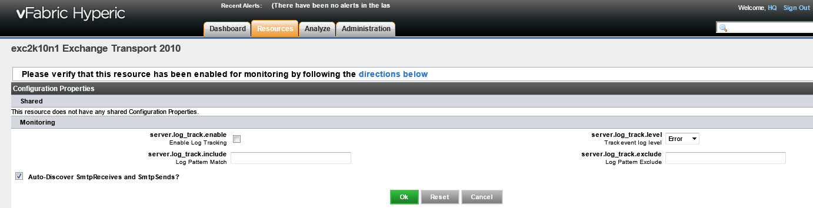

Microsoft Exchange Overview
Microsoft Exchange is a Simple Mail Transport Protocol (SNMP) server. This page describes the Hyperic plugin that manages Exchange.
Supported Versions and Requirements
The Exchange plugin supports Exchange 2010, Exchange 2007, and Exchange 2003.
Exchange Resources and the Hyperic Inventory Model
The indented list below illustrates the hierarchy of Hyperic resource types that map to vFabric Web Server.
Exchange
Exchange IMAP4
Exchange POP3
Exchange Web
Exchange Transport
Exchange TransportSmtpReceive
Exchange TransportSmtpSend
- Exchange resource type is a "server" in terms of the Hyperic inventory model; it represents the Exchange server.
- IMAP4, IPOP3, and Web resource types are a "services" in terms of the Hyperic inventory model; the represent the Exchange IMAP4, POP3, and WebMail services.
- Exchange Transport resource type is a "server" in terms of the Hyperic inventory model; it represents Hub Transport Server, through which SMTP traffic in Exchange Server is routed.
- Exchange TransportSmtpReceive and Exchange TransportSmtpSend resource types are "services" in terms of the Hyperic inventory model; the represent the receive and send services for SMTP traffic.
For more information about the Hyperic inventory model, see Resources, Resource Types and Inventory Types.
Configuration Instructions
The sections below have instructions for configuring Hyperic to manage Exchange.
Step 1: Install Hyperic Agent
If you have not already done so, install a Hyperic Agent on the vFabric Web Server host. See Install an Agent-Only Package in Getting Started with vFabric Hyperic for instructions.
Step 2: Import Exchange
After you start the Hyperic Agent, it should auto-discover the Exchange server. The server should appear in the Auto-Discovery portlet on the Hyperic Dashboard. Import the server.
Step 3: Configure Exchange in Hyperic
No configuration is required to enable Hyperic to collect Exchange metrics. As desired, you can disable discovery of services, and enable log tracking, as described below:
- To configure monitoring options for servers of type Exchange:
- Navigate to the Configuration Properties page for the Exchange server instance.

- By default the Exchange plugin discovers the IMAP4, POP3, and Web services running in Exchange. To disable service discovery uncheck the Auto-Discover IMAP4s, POP3s, and other services box and click OK.
- By default, the Exchange plugin does not perform log tracking for servers of type Exchange. To enable log tracking,
- Navigate to the Configuration Properties page for the Exchange server instance.
- To configure monitoring options for servers of type Exchange Transport:
- Navigate to the Configuration Properties page for the Exchange Transport server instance.
 - By default the Exchange plugin discovers the SmtpReceive and SmtpSend services running in Exchange Transport. To disable service discovery uncheck the Auto-Discover SmtpReceives and SmtpSend box and click OK.
- Navigate to the Configuration Properties page for the Exchange Transport server instance.
Step 4: Verify Metric Collection
Metrics should appear on the Monitor tab for a vFabric Web Server resource.
Resource Types and Management Functions
This section describes the management functions the vFabric Hyperic Web Server plugin performs.
Auto-Discovery
The plugin discovers exchange resources from the Windows registry. For servers, it looks for the key HKEY_LOCAL_MACHINE\SOFTWARE\Microsoft\Exchange\Setup.
Measurement
Hyperic's Exchange plugin obtains
A server instance is considered available if ...
See Exchange Metrics below for metric listings.